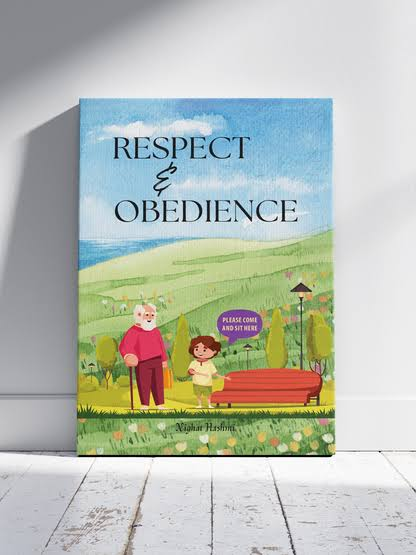

OBLIGATIONS OF YOUTH
Youth have obligations to themselves, their families, and society. These include personal responsibilities like education, hard work, and self-improvement, as well as responsibilities towards family like respecting elders and taking care of parents. Socially, youth are expected to contribute to their communities, obey laws, and promote positive change.
Here's a more detailed look
Personal Responsibilities
Education:

Youth are expected to pursue education and strive for knowledge and skill development.
Hard Work:

They should be dedicated to their tasks and endeavors, working hard to achieve their goals.
Self-Improvement:
Youth should continuously strive to become better individuals, both physically and mentally.
Respect for Elders:
Young people should show respect and honor to their parents and elders.
Taking Care of Parents:

They should provide care and support to their parents as they age.
Discipline and Time
Management:
Understanding the importance of discipline and managing time effectively is crucial.
Family Responsibilities:
Respect and Obedience:

Youth should respect and obey their parents and family members.
Care for Parents:
As they grow older, youth should provide care and support for their parents.
Contribution to Family Life:

They should contribute positively to the family's well-being.
Social Responsibilities:
Contribution to Society:

Youth should contribute to the betterment of their communities and society.
Law-Abiding Citizens:
They should obey laws and respect the rule of law.
Social Awareness:
"Youth should be aware of social issues and strive to promote positive change.
Civic Engagement:
They should participate in civic activities and contribute to the well-being of their community.
Environmental Responsibility:
Youth should be mindful of the environment and act responsibly.
Respect for Others:
They should respect the rights and dignity of all individuals, regardless of background.